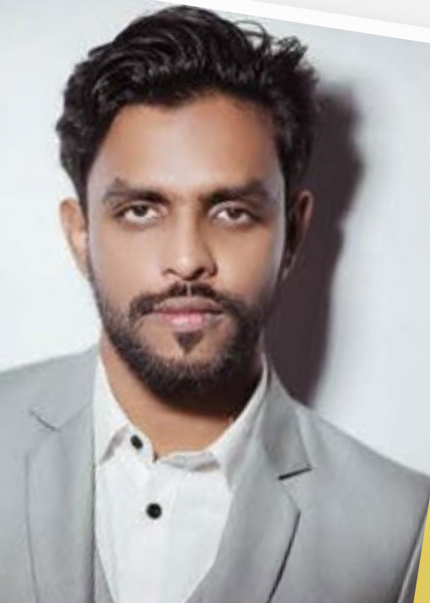

01
Clinical Dentistry
Comprehensive general dentistry, diagnosis and treatment planning, restorative care and surgical procedures.
Hello, I'm
Dentist / Implantology Practitioner / Technology Enthusiast
I bring together clinical dentistry, digital workflows and a curiosity for technology — with a focus on learning, thoughtful practice and creating what comes next.

A LITTLE ABOUT ME
I am a dental surgeon with more than a decade of clinical experience across India and the UAE, with a professional interest in implant dentistry and modern digital workflows.
My work is grounded in patient-centred care, sound clinical fundamentals and a commitment to continual development. Beyond the clinic, I enjoy exploring how software, artificial intelligence and emerging tools can improve the way we learn, plan and deliver care.
This site is a window into my professional journey, interests and independent projects.
Let's connect ↗WHAT I WORK ON
Comprehensive general dentistry, diagnosis and treatment planning, restorative care and surgical procedures.
Developing expertise in implant treatment planning, surgical and prosthetic principles, and evidence-informed clinical workflows.
Exploring digital tools, 3D workflows and practical AI applications that may support clinical learning and decision-making.
EXPERIENCE & DEVELOPMENT
Yenepoya Dental College, Mangalore, India
Academic foundation in clinical dentistryGeneral dentistry and surgical experience
Building breadth across everyday and advanced clinical careKings Dental Center, Karama
Continuing clinical practice and professional developmentImplantology, postgraduate development and technology
Expanding clinical knowledge and exploring new toolsProfessional milestones are presented as a concise overview. Please contact me for a detailed CV or credential verification.
IDEAS IN PROGRESS
A few areas where I experiment, explore and develop ideas outside clinical practice.
Exploring an AI-assisted workflow for analysing dental radiographs, identifying likely implant systems and organising clinical reference information.
CONCEPT DEVELOPMENTA personal visual learning space for collecting, organising and revisiting educational images, notes, diagrams and resources.
INDEPENDENT PROJECTA strategy game development experiment exploring isometric worlds, game systems and interactive design.
INDEPENDENT PROJECTThe goal is not simply to keep up with change,
but to keep learning how to create it.
OPEN TO MEANINGFUL CONNECTIONS
For professional enquiries, clinical collaboration, research discussions or technology projects, I would be glad to connect.